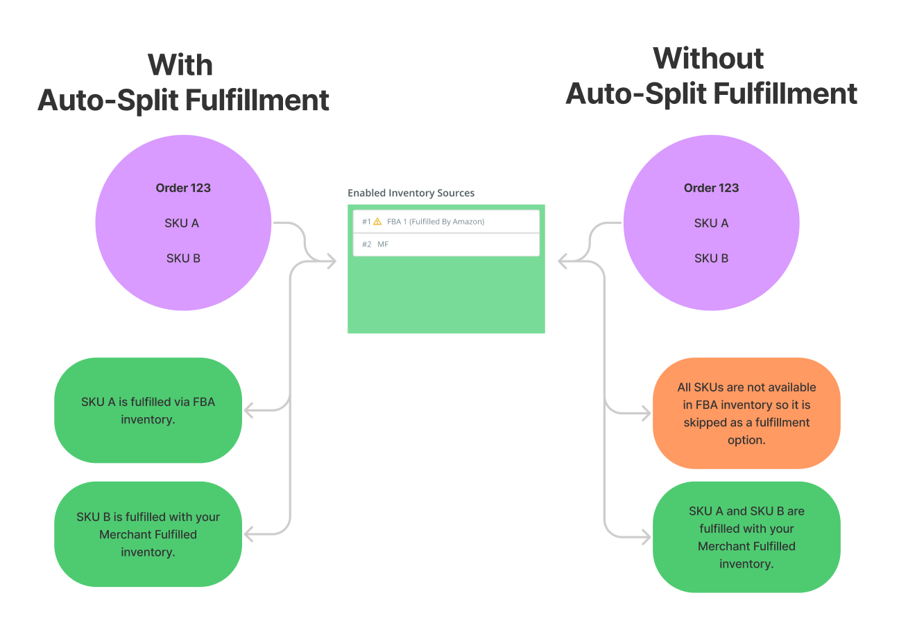

Auto-Split Fulfillment will automatically (and systematically) split an order based on your Inventory Source prioritization. This means when you receive a multi-SKU order, we will fulfill that order through your preferred methods hassle-free.
For example, say an order comes in for 1 of SKU A and 1 of SKU B. SKU A has inventory available in FBA (Fulfilled by Amazon), but SKU B only has inventory available in MF (Merchant Fulfilled). We will automatically split off SKU B to a separate order to fulfill from your own warehouse, and SKU A will be sent to Amazon to be fulfilled.

If an order comes in for multiple quantities of the same SKU, we will start by depleting your highest priority inventory source and then moving down your list of warehouses until the entire order is fulfilled.
This is a great time saver for business owners who want to increase their chances of orders being fulfilled via FBA, and reduce the number of times they have to fulfill the order manually. You also won't have to rely on manually splitting orders to get your order shipped to the customer in a timely manner!
The potential downside to this feature is that you may see a rise in your shipping costs due to split shipments.
This is set at the channel integration level. That means that you can turn this feature on for your Shopify orders, but keep it off for your eBay orders (or any combination that works for your business).
You'll turn the feature on under the Inventory tab of your edit channel page, like so:
Note: If you are using autosplit fulfillment, you must also enable "Autofill MCF Orders" for that integration. Same for "Autofill DLV Orders", if using Deliverr.
This feature does not work in conjunction with the SKU Level Inventory Source feature. Both features can be enabled, but the auto-splitting cannot be determined based on SKU Level Inventory Source settings. In that case, the order may still need to be split manually or the SKU Level Inventory Source settings changed.
Note: LM will NOT notify the marketplace that the order has shipped until all split parts have their respective tracking data. Once all tracking data has been added, LM will merge the split orders together into one and notify the marketplace that the order has shipped.